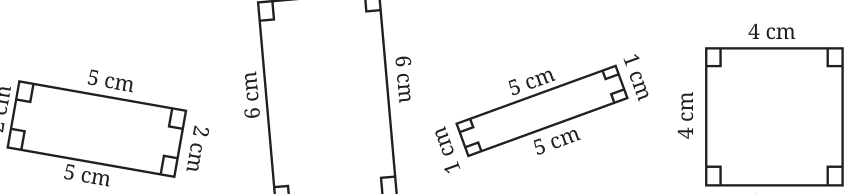
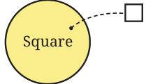
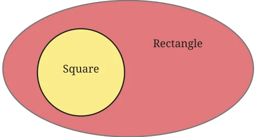
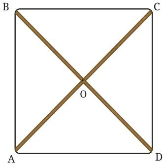
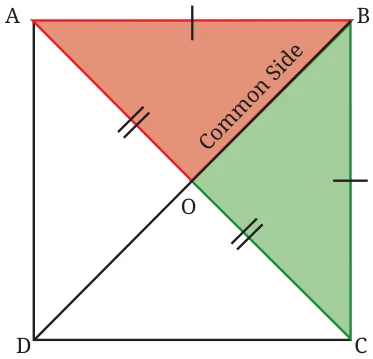

In the quadrilaterals below, are there any non-rectangles?


All these quadrilaterals are rectangles, including (iv). Quadrilateral
- is a rectangle because all its angles are \(90 ^{\circ}\) . However, it is a special kind of rectangle with all sides of equal length. We know that this quadrilateral is also called a square. Square: A square is a quadrilateral in which all the angles are equal to \(90 ^{\circ}\) , and all the sides are of equal length. Thus, every square is also a rectangle, but clearly every rectangle is not a square.
This relation can be pictorially represented using a Venn diagram. We have seen these diagrams before. In a Venn diagram, a set of objects is represented as points inside a closed curve. Typically, these closed curves are ovals or circles. For example, the set of all squares is represented as

Each point in the region represents a square, thereby covering all the possible squares. Since every square is a rectangle, the Venn diagram representation of these two sets would be as follows -


Let us consider the Carpenter’s Problem again. If the wooden strips have to be placed such that the thread passing through their endpoints forms a square, what must be done?
As in the previous case, let us try to construct a square, one of whose diagonals is of length 8 cm. While solving the Carpenter’s Problem for the case of a rectangle, we have seen that to get a quadrilateral with all angles \(90 ^{\circ}\) (and opposite sides of equal length), the diagonals have to be drawn such that -

- they are of equal lengths, and
- they bisect each other.
What more needs to be done to get equal sidelengths as well? Can this be achieved by properly choosing the angle between the diagonals? See if you can reason and/or experiment to figure this out!
Deduction \(5 -\) What should be the angle formed by the diagonals?
The angle between the diagonals can be found using the notion of congruence! Suppose we join the equal diagonals such that they bisect each other and result in a square. Let us label the square ABCD. To find the angle formed by the diagonals, what are the two triangles we should consider for congruence?

By the SSS condition for congruence, \(\triangle BOA \cong \triangle BOC\)
Can this be used to find the angles \(\angle BOA\) and \(\angle BOC\) formed by the diagonals? Since these angles are corresponding parts of congruent triangles, they are equal. Further, these angles together form a straight angle. So \(\angle BOA + \angle BOC = 180 ^{\circ}\) . Thus, these angles have to be \(90 ^{\circ}\) each.

This shows that the diagonals of a square bisect each other at right angles. This means that the diagonals have to be drawn such that they are of equal lengths and bisect each other at right angles. Since the endpoints of the diagonals uniquely determine the vertices of a quadrilateral, we will get a square when the diagonals are joined this way. Using this fact, construct a square with a diagonal of length 8 cm.